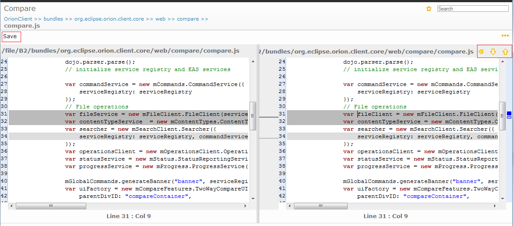

The Compare page shows a comparison between two states of a single file. You can browse through individual differences using the Next Diff and Previous Diff buttons at the top right hand side of the page. If the file on the left is an uncommitted change, you can merge changes from the right hand side using the Copy Current Change From Right to Left button, or edit the file directly. Once you have finished editing, hit Ctrl+S or click Save in the tool bar to save your changes.

This document is maintained in a collaborative wiki. If you wish to update or modify this document please visit http://wiki.eclipse.org/Orion/Documentation/User_Guide/Reference/Compare_page